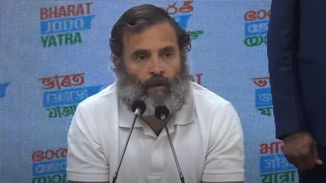
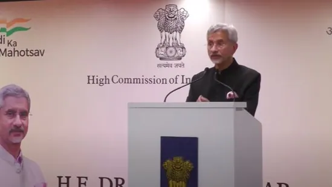
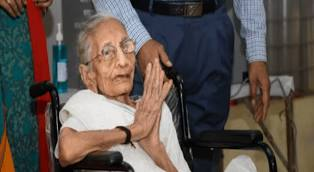
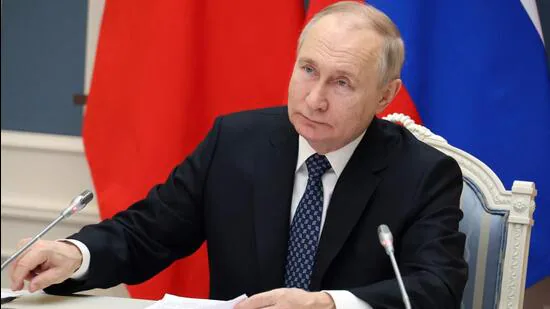
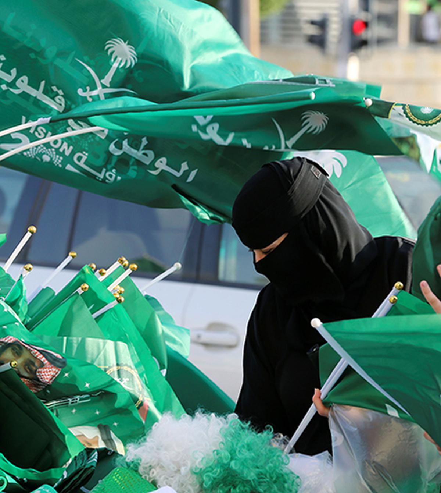

Rahul Gandhi said he won't comment on Akhilesh Yadav's Bharat Jodo remark. "Akhilesh ji, Mayawati ji and others want mohabbat ka Hindustan and there is some relation of ideology between us," Rahul Gandhi said.
Congress leader Rahul Gandhi on Saturday said there is a connection with Akhilesh Yadav and Mayawati in the journey against hatred. Bharat Jodo Yatra is open to all, Rahul Gandhi said adding that he won't comment on who will be joining and not. "Hatred and love are diametrically opposite...But many people want to spread love. I know Akhilesh ji and Mayawati ji don't want hatred. Rishta toh hai..."
The comment comes as Akhilesh Yadav recently said he will not join the yatra as the Congress and the BJP are the same. "Everyone knows that BJP and Congress are not the same. Because had it been the case, then Narendra Modi would not have wanted a Congress-mukt Bharat. Is he then asking for a BJP-mukt Bharat. But Akhilesh ji has the freedom to say what he feels," Rahul Gandhi said. "If you see Samajwadi Party, they don't have a national framework. They have a positioning in UP which they have to defend and for that, he may not come to the yatra. But the ideals of Samajwadi Party will not work in Kerala, Karnataka and Bihar. Our work is to provide a national framework to the opposition," Rahul Gandhi said adding that the role of the Congress is also to make sure that opposition parties feel comfortable and respected. “It should be mutual respect. They should respect us and we too,” Rahul Gandhi said.
Note : This report is not edited or published by us.
Report Source : Hindustan Times
External affairs minister S Jaishankar said border challengers intensified during the Covid and India's relations with China are not normal now.
External affairs minister S Jaishankar on Friday sent a stern message to Pakistan and China as he interacted with the Indian community in Cyprus. India wants good neighbourly relations with everybody but that does not mean "excusing" terrorism, the foreign minister said in a veiled dig without naming Pakistan. On border issues with China, Jaishankar said India will never agree to any attempt to change the Line of Actual Control unilaterally. The statements come days after the Indian and the Chinese troops clashed in the Tawang sector of Arunachal Pradesh on December 9. The government said there was no casualty on the Indian side which gave a befitting reply to the Chinese troops. The issue of terrorism, on the other hand, saw India and Pakistan trading barbs at United Nations recently. "No country has suffered as much from terrorism as we have and we have been very clear that we will never accept it or normalise it. We will never allow terrorism to force us to the negotiation table. We want good neighbourly relations with everybody but that does not mean excusing or looking away or rationalising terrorism. That we are very clear," Jaishankar said in Cyprus.
"The second, of course, is our borders. The challenges intensified during the Covid period. And you all know that the state of our relations with China are not normal because we will not agree to any attempt to change the Line of Actual Control unilaterally," Jaishankar added. On the national security side, Jaishankar said the message that goes out from India is of firmness. "On diplomacy, I can say that at this time there is a lot of expectation from India as India is being seen today as a strong economy and one that will contribute to the problems. We are also seen as a country which is independent and has the courage to stand up. Also, a country which is able to bring very different countries which are not able to deal with each other," Jaishankar said.
Note : This report is not edited or published by us.
Report Source : Hindustan Times
In June this year, PM wrote a blog on the occasion of his mother’s birthday, paying tribute to her remarkable life and indomitable spirit. Excerpts: Mother is not just any other word in the dictionary. It encompasses a whole range of emotions -- love, patience, trust, and a lot more. Across the world, irrespective of country or region, children have a special affection for their mothers. A mother not only gives birth to her children, but also shapes their mind, their personality, and their self confidence. And while doing so, mothers selflessly sacrifice their own personal needs and aspirations.
My Mother is as simple as she is extraordinary. Just like all mothers! As I write about my Mother, I am sure that many of you would relate to my description of her. While reading, you may even see your own mother’s image. My Mother was born in Visnagar in Mehsana in Gujarat, which is quite close to my hometown Vadnagar. She did not get her own mother’s affection. At a tender age, she lost my grandmother to the Spanish Flu pandemic. She does not even remember my grandmother’s face or the comfort of her lap. She spent her entire childhood without her mother. She could not even go to school and learn to read and write. Her childhood was one of poverty and deprivation.
Note : This report is not edited or published by us.
Report Source :TimesofIndia
While India formally assumed the G20 Presidency on December 1, it took over the rotating presidency of the Shanghai Cooperation Organisation (SCO) on September 16.
Russian President Vladimir Putin on Friday voiced confidence that India’s presidencies of the SCO and G20 will build multi-dimensional cooperation between the two countries and will strengthen the stability and security in Asia and the entire world.
While India formally assumed the G20 Presidency on December 1, it took over the rotating presidency of the Shanghai Cooperation Organisation (SCO) on September 16. In his New Year messages to President Droupadi Murmu and Prime Minister Narendra Modi, Putin noted that Russia and India marked the 75th anniversary of their diplomatic relations in 2022 and, relying on positive traditions of friendship and mutual respect, the countries continue to develop their specially privileged strategic partnership, the Kremlin said in a statement. Putin said the two countries carried out large-scale trade and economic projects in addition to energy, military technology and other areas of cooperation, and coordinated efforts in addressing important matters of regional and global agendas. “I am confident that India’s recently started SCO and G20 presidencies will open new opportunities for building multi-dimensional Russia-India cooperation for the benefit of our peoples, in the interests of strengthening stability and security in Asia and the entire world,” he said.
Note : This report is not edited or published by us.
Report Source :TimesofIndia
Saudi Arabia is one of only a dozen countries that do not have any bilateral agreement with India to “ensure criminals do not escape...for want of evidence available in different countries.”
virtual negotiation meeting with Saudi Arabia. File image for representation. | Photo Credit: REUTERS India and Saudi Arabia are in talks to sign a Mutual Legal Assistance Treaty (MLAT) to obtain formal assistance from each other in investigations related to criminal cases. Saudi Arabia is only among a dozen other countries that does not have either an MLAT or any other bilateral agreement with India to facilitate such investigations. India has so far signed MLATs with 45 countries, and is also in talks to finalise MLATs with Italy and Germany. According to the Ministry of Home Affairs (MHA), an MLAT is “a mechanism whereby countries cooperate with one another in order to provide and obtain formal assistance in prevention, suppression, investigation and prosecution of crime to ensure that the criminals do not escape or sabotage the due process of law for want of evidence available in different countries.” Officials in Saudi Arabia and India have now initiated discussions to sign the treaty. On November 7, India held the first virtual negotiation meeting with Saudi Arabia. The Indian delegation was led by officials from the MHA, the Ministry of External Affairs, the Central Bureau of Investigation (CBI) and the Law Ministry.
Note : This report is not edited or published by us.
Report Source : Thehindu.com